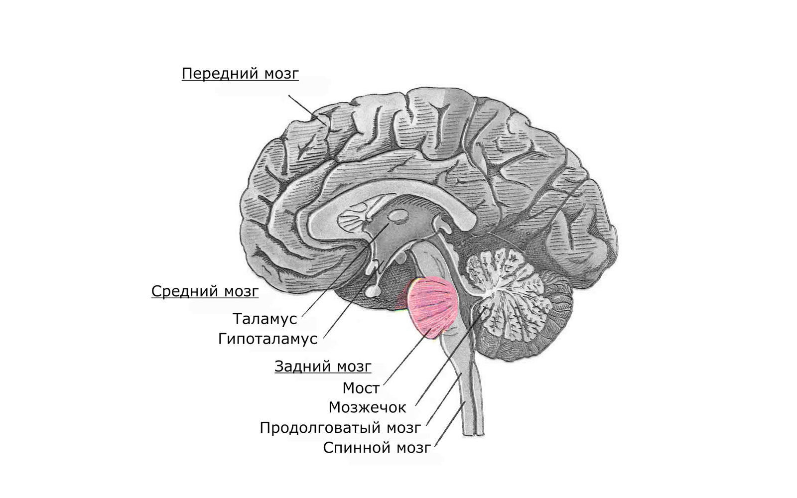

<head style="display: block" lang="ru"><title style="display: block" contenteditable>head – всему голова</title><style style="display: block" contenteditable></style></head>

Роман Ганин, @realetive
NB! Презентация содержит реалистичные изображения анатомических препаратов…
пару слов о том, что у нас в «голове»…
пару слов о том, что у меня в «голове»…
Twitter, GitHub, почта, VKontakte, Facebook и т. д.: @realetive
пару слов о том, что у всех в «голове»…
<!DOCTYPE html><html lang="ru"><title>head – всему голова</title><body>Привет! Яживойвалиден!</body></html>
<!DOCTYPE html><html lang="ru"><title>head – всему голова</title><body>Привет! Яживойвалиден!</body></html>
<!DOCTYPE html><html lang="ru"><title>head – всему голова</title><body>Привет! Яживойвалиден!</body></html>
<!DOCTYPE html><html lang="ru"><title>head – всему голова</title><body>Привет! Яживойвалиден!</body></html>
<!DOCTYPE html><html lang="ru"><title>head – всему голова</title><body>Привет! Яживойвалиден!</body></html>
Документ успешно проходит валидацию на w3c.
Три тега…
<head lang="ru"><title>head – всему голова</title><style>#thisSlide pre {color: #000;background-color: transparent;}</style></head>
<head style="display: block" lang="ru"><title style="display: block">head – всему голова</title><style style="display: block">#thisSlide pre {color: #000;background-color: transparent;}</style></head>
<head style="display: block" lang="ru"><title style="display: block" contenteditable>head – всему голова</title><style style="display: block" contenteditable></style></head>
Мозг отвечает за сознание человека, т. е. за определение понятия «Я»:
<title>Я – документ!</title>
<!-- CSS-стили во внешнем файле --><link rel="stylesheet" href="styles.css"><!-- CSS-стили прямо в документе --><style> /* ... */ </style><!-- JavaScript --><script src="script.js"></script><script> // Привет <script><noscript><!--no JS alternative--></noscript>
<meta charset="utf-8"><meta http-equiv="x-ua-compatible" content="ie=edge"><!-- habr.ru/p/201358 --><meta name="viewport" content="width=device-width,initial-scale=1, shrink-to-fit=no">
Эти три тега настоятельно рекомендуется указать в самом начале

<!-- Указываем полный базовый адрес текущегодокумента и задаём целевое окно для всехссылок на текущей странице --><base href="//wsd.events/assets/"target="_blank">

<!-- Отключаем автоматическое определениеи форматирование телефонных номеров --><meta name="format-detection" content="telephone=no">
… и браузер их больше «не видит»
<!-- …в результатах поисковой выдачи --><meta name="google" content="nositelinkssearchbox">
Мы встроили поиск к себе в поиск, чтобы ты мог искать, пока ищешь…
<!-- …если Google Chrome неправильно определяетосновной язык… --><meta name="google" content="notranslate">
…или у вас есть локализованная страница для этого пользователя.
<!-- Переиндексировать страницу раз в 2 недели --><meta name="revisit" content="14">
Яндекс и Гугл игнорирует содержимое этого тега…
Да легко!
<!-- Указываем возрастные ограничения --><meta name="rating" content="safe for kids">
…ибо ■■■■■!
<!-- Описание документа --><meta name="description"content="Я — сексуальная верстальщица…">
В определённых ситуациях содержание этого тега используется в результатах поиска.
<!-- Отменяем индексацию «зеркала» --><meta http-equiv="url" content="https://всд.рф/">
Тег прекращает индексацию страницы поисковой системой, и перенаправляет робота поисковой машины по указанной ссылке.
<!-- Позволяет контролировать источникизагрузки для контента --><meta http-equiv="Content-Security-Policy"content="default-src 'self'">
Желательно расположить этот тег как можно выше, т. к. он применяется только к контенту, перечисленному после него.
Подробнее: bit.ly/mdn-csp
<meta property="fb:app_id" content="123456789"><meta property="og:url" content="//wsd.events/p.html"><meta property="og:type" content="website"><meta property="og:title" content="Content Title"><meta property="og:image" content="//wsd.events/i.jpg">…
<meta property="op:markup_version" content="v1.0"><!-- URL веб-версии статьи --><link rel="canonical" href="//wsd.events/a.html"><!-- Стили, применяемые к ресурсу --><meta property="fb:article_style" content="myarticlestyle">…
<meta name="ICBM" content="широта, долгота"><meta name="geo.position" content="широта;долгота"><meta name="geo.region" content="код страны, регион"><meta name="geo.placename" content="город">
<!-- Указываем целевую страницу//wsd.events/2016/10/01/?page=2 --><link rel="canonical"href="//wsd.events/2016/10/01/">
Гугл о канонических URL: bit.ly/google-canonical
Например, оффлайн-редакторы для блогов на WordPress…
<link rel="EditURI" href="//wsd.events/xmlrpc.php?rsd"type="application/rsd+xml" title="RSD">
<!-- Загружаем внешний HTML-файл в этот --><link rel="import" href="component.html">
Подробнее: habr.ru/p/230751.
А здесь будет демо (если получится):
<!-- Определяем сторонние подключения --><link rel="dns-prefetch" href="//www.google-analytics.com/"><link rel="dns-prefetch" href="//bit.ly/"><!-- Предзапрос --><link rel="prefetch" href="https://web-standards.ru/"><!-- Предподключение --><link rel="preconnect" href="https://web-standards.ru/">
<link rel="preload" href="cat.jpg" as="image"><link rel="preload" href="cat.mp4" as="video"><link rel="preload" href="ComicSans.woff" as="font">
<link rel="prerender" href="//bit.ly/lecture-head">
…когда мы точно знаем, что пользователь туда перейдёт.
<!-- Автоматически оповещаем сайты, ссылающиеся на него --><link rel="pingback" href="//wsd.events/xmlrpc.php"><!-- Уведомляет URL, когда вы ссылаетесь на негона вашем сайте --><link rel="webmention" href="//wsd.events/webmention">
<!-- РСС и Атом-ленты --><link rel="alternate" href="//wsd.events/rss.xml"type="application/rss+xml" title="RSS"><link rel="alternate" href="//wsd.events/feed.atom"type="application/atom+xml" title="Atom 0.3">
<!-- Ссылка на AMP-вресию текущего документа --><link rel="amphtml"href="//wsd.events/2016/10/01/amp-version.html">
<!-- Документ, содержащий архивную ссылкуна текущую страницу --><link rel="archives" href="//wsd.events/2016/10/"title="Конференции октября 2016">
<!-- Документ, располагающийся «выше»по иерархии структуры сайта --><!-- Статья «Путь наставника» --><!-- web-standards.ru/articles/path-of-tutor/ --><link rel="index"href="http://web-standards.ru/category/articles/"title="Статьи">
<link rel="start"href="//wsd.events/2009/11/28/"title="Самый первый WSD Минске">
<link rel="prev"href="//wsd.events/2016/06/25/"title="WSD в Екатеринбурге">
<!-- Первый, следующий, предыдущий и последнийдокумент в серии --><link rel="first" href="https://example.com/feed"><link rel="next" href="https://example.com/feed?page=4"><link rel="previous" href="https://example.com/feed?page=2"><link rel="last" href="https://example.com/feed?page=147">
<!-- IE 11, Chrome, Firefox, Safari, Opera --><link rel="icon" href="img/to/favicon-16.png" sizes="16x16"><link rel="icon" href="img/to/favicon-32.png" sizes="32x32"><link rel="icon" href="img/to/favicon-48.png" sizes="48x48"><link rel="icon" href="img/to/favicon-62.png" sizes="62x62"><link rel="icon" href="img/to/favicon-192.png" sizes="192x192">
+ type="image/png"
<!-- JSON-файл со спецификацией вашего приложения --><link rel="manifest" href="manifest.json">
Автоматизация:
# Автоматическая генерация фавиконок и манифестаnpm install favicons -D
<link rel="alternate" title="English"hreflang="en"href="https://en.wsd.events/2016/10/01/"><link rel="alternate" title="Русскоговорящие англичане"hreflang="ru-en"href="https://ru-en.wsd.events/2016/10/01/">
Гугл о мультиязычности: bit.ly/google-langs
<!-- Участники проекта, благодарности, технологии --><rel="author" href="humans.txt">
Как robots.txt, только человечный и для людей – humanstxt.org.
<link rel="me" href="//romanganin.ru" type="text/html"><link rel="me" href="mailto:hi@romanganin.ru"><link rel="me" href="sms:+79216556291">
По правилам использования авторских мета-тегов личная страница автора обязательно должна располагаться на том же домене, что и авторский текст: habr.ru/p/121097
<!-- Ссылка на документ, описывающий авторские права --><link rel="copyright" href="copyright.html">